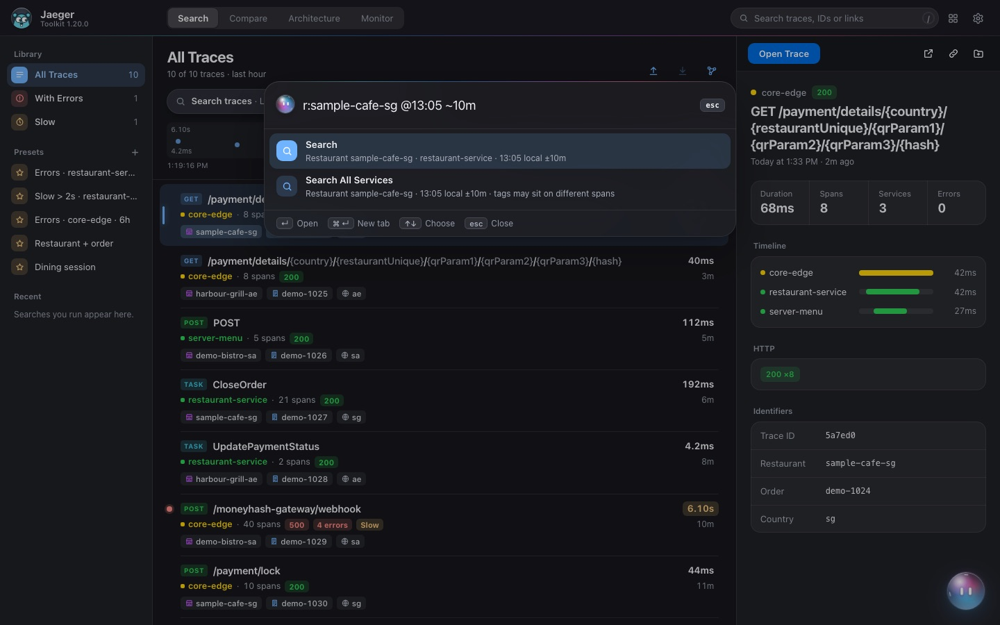
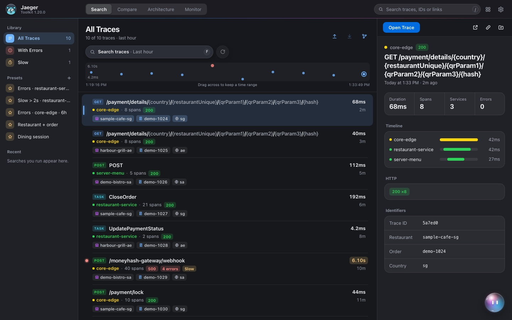
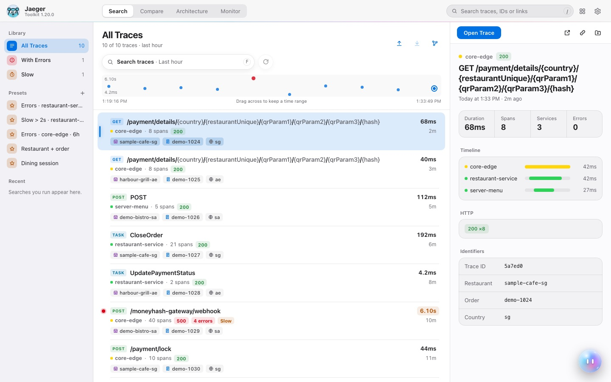
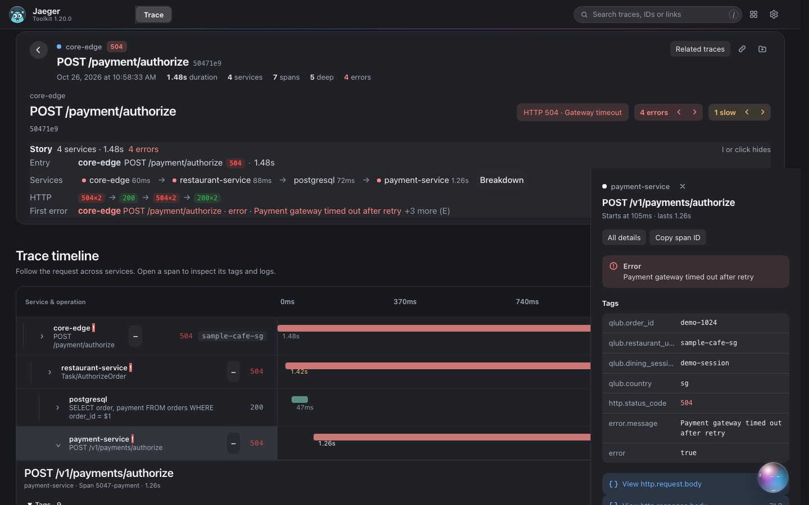
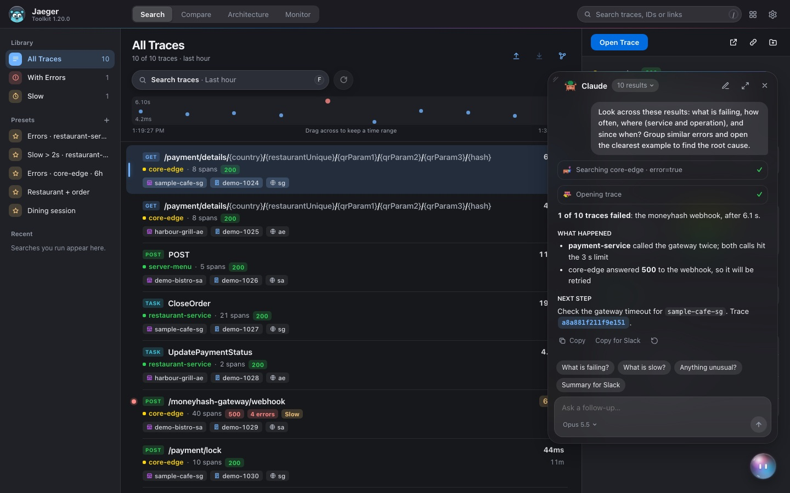
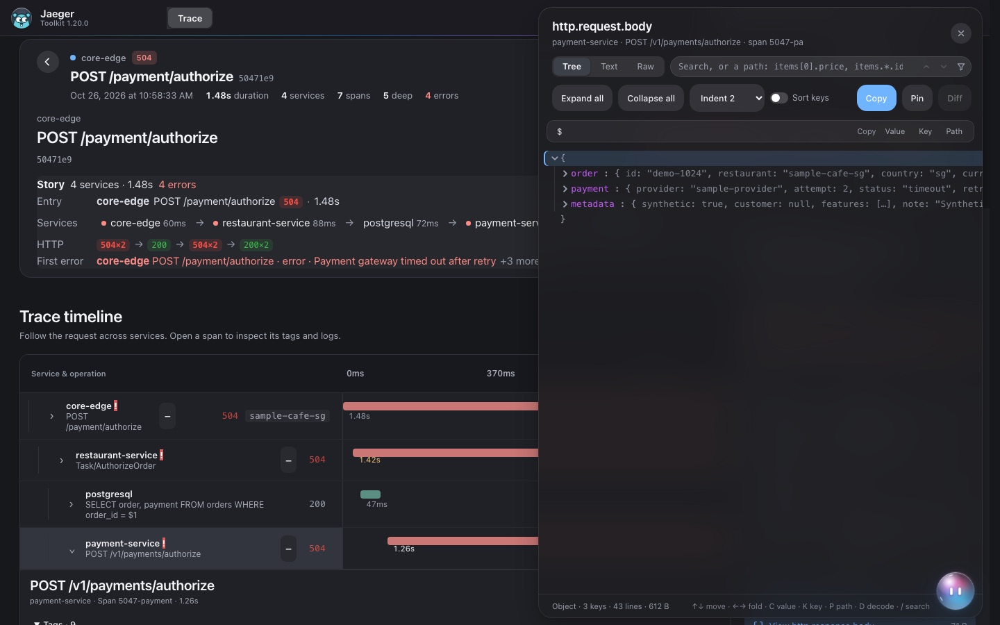

Search in plain words
One field instead of a form. Press / anywhere to find a trace by its ID, a link, an order, a session or a restaurant.
A new interface for Jaeger: search in plain words, traces that read like a story, and Claude beside every trace. Same Jaeger. Same data. Easier to read.



One field instead of a form. Press / anywhere to find a trace by its ID, a link, an order, a session or a restaurant.

The path through your services, the time it took and the first error sit at the top. Press E for the next error.

Ask why a trace failed or where the time went. Claude opens the traces it needs and answers in short sections you can copy for Slack.

Request and response bodies in a tree you can fold and search with paths like items[0].price, decode base64 in place, and diff two payloads.
After that, Software Update keeps it current. You don't need a GitHub account.
JaegerToolkit-1.37.5.zip and unzip it somewhere permanent, like your Applications or Documents folder.chrome://extensions (or edge://extensions) and switch on Developer mode at the top right.One helper runs Claude Code with your own login and installs updates. Run it once from the unzipped folder (Node.js and Claude Code must be installed).
# macOS sh native-host/install.sh # Windows: double-click native-host\install.cmd
Open Settings › About and choose Update now. Your settings, documents and history stay, because they live in the browser. A git checkout is never overwritten.
Each release is built, signed and published here by a workflow. Your copy installs it only after checking the signature, the size and the SHA-256.
| Service & operation | tag pushedwithin a dayinstalled |
|---|---|
| gitpush tag v1.37.5 | |
| release.ymlbuild, test and package the zip | Actions |
| release-feedsign latest.json with the release key | |
| jaeger-toolkit-releasespublish the zip and the feed | this repository |
| Software Updatereads the feed at browser start, daily, or on Check now | |
| native helperverify signature, size, SHA-256; install; restart | Update now |
Every version, newest first. Each zip is the whole extension; you never need the ones in between.
Software Update does this for you. If you load a zip by hand, you can check it yourself.
20f212f278bb94ca737d344519b549ca49b12c8b0c48904f4603b345a49575ae
In the folder you downloaded to:
# macOS shasum -a 256 JaegerToolkit-1.37.5.zip # Windows certutil -hashfile JaegerToolkit-1.37.5.zip SHA256
Each release carries latest.json: the version, size, SHA-256 and a signature made with the release key. Copies of the toolkit trust only the public key they shipped with.